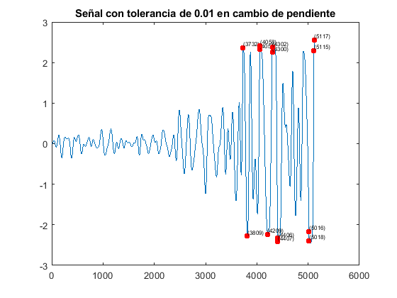

Contents
Encontrando los cambios abruptos de pendiente en la señal
[y]=xlsread('des_est_mo_lineal.xlsx');
dy = [0 diff(y)];
tol = 0.01;
[rs1]=find(diff(dy)>tol);
tol = 0.02;
[rs2]=find(diff(dy)>tol);
Impresión de resultados
figure
plot(y)
hold on
for c = 1:size1(1,2)
plot(rs1(1,c),y(1,rs1(1,c)),'r.','MarkerSize',20)
X=rs1(1,c);
Y=y(1,rs1(1,c));
strValues = num2str(X,'(%d)');
text(X,Y,strValues,'VerticalAlignment','bottom','Fontsize',6);
end
title('Señal con tolerancia de 0.01 en cambio de pendiente')
figure
plot(y)
hold on
for c = 1:size2(1,2)
plot(rs2(1,c),y(1,rs2(1,c)),'r.','MarkerSize',20)
X=rs2(1,c);
Y=y(1,rs2(1,c));
strValues = num2str(X,'(%d)');
text(X,Y,strValues,'VerticalAlignment','bottom','Fontsize',9);
end
title('Señal con tolerancia de 0.02 en cambio de pendiente')
